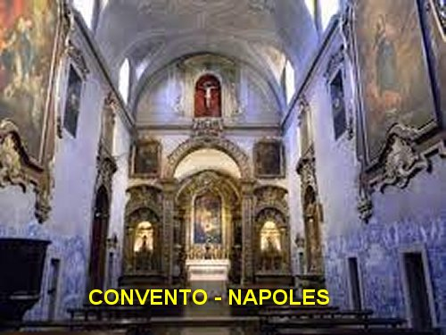
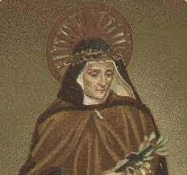

“ANJO DA GUARDA, PRECIOSO TUTOR”
QUERIA O CASAMENTO DA FILHA
O pai de Ana Maria vivia uma existência extremamente pobre, pois a fabrica mal oferecia uma exígua renda para a família, que já somava cinco pessoas, e por essa razão, ele nem conseguia cumprir integralmente o valor dos salários ajustados com suas filhas e com as outras pessoas que trabalhavam na fabrica. E por isso mesmo, vivia imaginando num possível casamento que Ana Maria poderia arranjar, se escolhesse um rapaz de família financeiramente bem estável. Evidentemente ele pensava no assunto, com o claro objetivo de aumentar a sua própria renda e auferir possíveis vantagens.
“Mas, o Anjo da Guarda de Ana Maria, sempre cuidadoso, não permitia que o assunto de união matrimonial envolvesse a pessoa dela. E também, consciente da permanente presença de satanás traiçoeiro e maquiavélico em todos os lugares, um verdadeiro inimigo da humanidade, por precaução o Anjo lhe ensinou a discernir as verdadeiras aparições, daquelas que eram falsas, mantendo-a prevenida contra as tramas do demônio. O Anjo lhe antecipou que o maligno sempre utiliza de muitos artifícios para alcançar os seus objetivos. Assim em qualquer aparição que surgisse para ela, devia ser observado atentamente o cumprimento inicial do visitante, ou seja, quando se apresentassem a ela e se mencionassem os Sagrados Nomes de JESUS e de MARIA, era uma boa aparição, porque nesses Santos Nomes, ela encontrará sempre a luz para o seu espírito, a força para o seu coração, e um refúgio seguro contra todas as potências inimigas. Assim, aquela era uma ótima aparição”.
ZELO PATERNO
Sobre as mencionadas investidas de seu pai, na verdade elas visavam fazer com que Ana Maria vivesse como todas as outras donzelas da sua idade, ao invés de permanecer em continua oração na Igreja e em casa. E também, tinha o principal objetivo de fazer com que ela desistisse do desejo de se tornar uma religiosa.
PEDIDO DE CASAMENTO
Mas na verdade, o pai também tinha grande ansiedade para concretizar os seus projetos na Empresa, e principalmente agora quando Ana Maria estava completando 16 anos de idade. Logo ele se movimentou e arranjou um cavalheiro rico que veio pedir a mão da moça em casamento. Ela respeitosamente recusou as palavras do pai, dizendo-lhe: “Meu pai, não posso fazer a sua vontade nesse pedido, porque estou resolvida a deixar o mundo e a vestir o hábito religioso na Ordem Terceira de São Francisco. E assim, agora diante do senhor, aproveito esse momento para lhe pedir a sua autorização”.
Essa determinação foi um rude golpe para o avarento pai, que julgava tal união como sendo a ocasião certa, para alcançar a melhoria da situação econômica da família. Por isso empregou todos os meios para convencer a filha a se casar, inclusive usando agressão física. Trancou-a durante vários dias em um quarto da casa, fornecendo-lhe somente como alimento: pão e água. No final do primeiro dia, a mãe saiu e conseguiu que um frade menor, Padre Teófilo, viesse a sua casa e convencesse o pai a deixá-la em liberdade para seguir a vocação que ela escolheu.

E assim, Ana Maria com 16 anos de idade, no dia 8 de Setembro de 1731, foi admitida na “ORDEM TERCEIRA DE SÃO FRANCISCO”, na Reforma de São Pedro de Alcântara, escolhendo os nomes de “MARIA”, por devoção a NOSSA SENHORA; o nome de “Francisca”, por devoção a SÃO FRANCISCO; e o nome “das Cinco Chagas”, por causa da sua grande devoção à Sagrada Paixão de NOSSO SENHOR JESUS CRISTO. Desse modo, na Ordem religiosa o nome de Ana Maria ficou assim: “Maria Francisca das Cinco Chagas”.
FALECIMENTO DA MÃE
Tendo falecido a sua mãe, o pai desejoso de casar novamente, quis pôr sobre seus ombros o sustento e o cuidado da família, que constava então de quatro pessoas para alimentar e vestir. Com dificuldade, a Santa livrou-se desse encargo, alegando sua má saúde. No entanto, o avarento pai passou a cobrar-lhe o aluguel do pequeno cômodo que passou a usar na casa paterna, sendo ela obrigada a recorrer aos seus benfeitores para pagar o aluguel e assim atender a sua família.
Todavia, o seu diretor espiritual Padre João Pessiri, a colocou em contato com uma Terciária Professa Alcantarina, Maria Felícia. E ambas passaram a viver sem pagar aluguel, numa casa do piedoso Padre Pessiri; Maria Francisca ali permaneceu por 38 anos, até a sua morte. Ela viveu no mundo secular, comportando-se como verdadeira religiosa, que realmente ela era, fazendo o bem, cultivando a caridade e divulgando com amor e total disposição, a bondade, a beleza, a infinita misericórdia e a grandeza do SENHOR DEUS DA VIDA.
MANIFESTAÇÕES SOBRENATURAIS

Maria Francisca tinha frequentes êxtases quando estava em oração. A SANTÍSSIMA VIRGEM MARIA lhe aparecia e lhe trazia mensagens. O demônio também se apresentava em forma de um cão raivoso que a aterrorizava. O Anjo da Guarda lembrou-lhe que ao fazer o Sinal da Cruz e ao pronunciar os nomes de JESUS, MARIA e JOSÉ, o demônio desaparecia. Também, certo dia em que rezava diante do Crucifixo ela ouviu: Quando o ataque do inimigo das almas te perturbar faça o Sinal da Cruz e, além de invocar as três Pessoas Divinas da Santíssima Trindade PAI, FILHO e ESPÍRITO SANTO, também deves dizer várias vezes: JESUS, MARIA e JOSÉ”.
Certo dia varrendo a sacristia ouviu uma voz que lhe dizia: Maria Francisca, fuja e saia rápido daqui! Ela saiu correndo rapidamente, e minutos depois, o teto da sacristia da velha Igreja desabou!
Ela era tão fervorosa e penitente, que muitas pessoas admiradas diziam: Maria Francisca livra sozinha muitas e muitas almas do Purgatório somente com os seus sofrimentos e orações”.
AS CHAGAS NO CORPO
As CINCO CHAGAS DE JESUS apareceram em seu corpo, a seu próprio pedido, mas DEUS as tornou invisíveis, apenas permitindo que se manifestassem as dores que elas causavam. As chagas dos pés e do lado direito permaneciam totalmente ocultas. As Chagas das Mãos eram reveladas, mas para oculta-las, ela mesma usava longas e grossas luvas. Ao rezar a Via Sacra, sempre sofria algumas dores parecidas com aquelas que JESUS sofreu no Horto das Oliveiras, durante a Flagelação e também na Coroação de Espinhos, quando estava no Pretório. Em cada sexta-feira a Santa entrava em agonia como se estivesse morrendo na Cruz. Maria Francisca piedosamente oferecia todos os seus sofrimentos a DEUS, pela conversão dos pecadores e pelo descanso das almas que estavam no Purgatório.
 FENÔMENOS DAS
HÓSTIAS CONSAGRADAS
FENÔMENOS DAS
HÓSTIAS CONSAGRADAS
“Um dos fenômenos mais extraordinários de Santa Maria Francisca aconteceu durante a Sagrada Comunhão na Santa Missa. Por três vezes a Santa Hóstia voou de onde estava e pousou em seus lábios! Uma vez, quando o Sacerdote disse”, "Este é o Cordeiro de Deus. A Hóstia que o Padre tinha nas mãos saiu voando e foi se alojar na boca da Santa”. .Em Outra oportunidade, do Deposito de Hóstias que estava sobre o Altar de Celebrações, "uma Hóstia voou para a sua boca”.; Em outra Santa Missa, "o Sacerdote partiu a Hóstia grande em pedaços e logo um pedaço voou até a fervorosa Santa, que aguardava ajoelhada o momento de comungar”.
AMIGA DO MENINO JESUS
No Natal de 1741, o MENINO JESUS lhe falou: Quero que sejamos amigos para sempre".Foi tão grande a emoção dela ao ouvir NOSSO SENHOR, que ficou cega durante 24 horas. Ao recobrar a visão, dedicou muito mais carinho e amor ao SENHOR JESUS e procurou por todos os meios fazê-LO muito mais amado pelos outros.